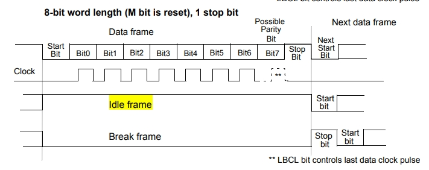
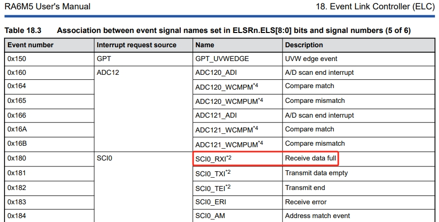
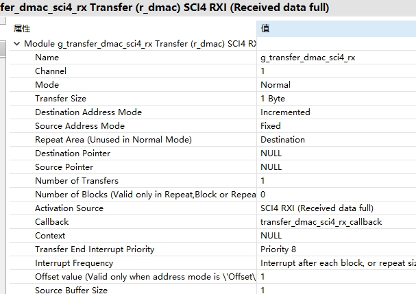

十二、从0开始卷出一个新项目之瑞萨RA6M5串口DMA接收不定长
一、概述
- 十一、从0开始卷出一个新项目之瑞萨RA6M5串口DTC接收不定长
- 关键原理：串口空闲中断，stm32利用空闲中断来处理串口dma接收不定长度，可用hal库api
- 瑞萨RA使用gpt定时器和elc来硬件检测串口空闲。但是：1、fsp没有sci+dma的api，需要自己封装；2：dma接收不定长的实现
- 参考野火：
参考资料：

二、对策：通过rx full elc gpt判断串口空闲
2.1 用户手册


2.2 框图
graph TB
A[event signal：<br>SCI0_RXI Receive data full]
C[GPT1：One-Shot]
D[g_timer0CB]
E[接收rx dma数据]
A --Start Source-->C
A --Stop Source-->C
C --溢出中断--> D
D --R_SCI_UART_Read_DMA--> E
2.3 fsp配置



2.4 串口dma api封装
fsp_err_t R_SCI_UART_Write_DMA (uart_ctrl_t * const p_api_ctrl, uint8_t const * const p_src, uint16_t const bytes)
{
/* SCI SCR register bit masks */
#define SCI_SCR_TEIE_MASK (0x04U) ///< Transmit End Interrupt Enable
#define SCI_SCR_RE_MASK (0x10U) ///< Receive Enable
#define SCI_SCR_TE_MASK (0x20U) ///< Transmit Enable
#define SCI_SCR_RIE_MASK (0x40U) ///< Receive Interrupt Enable
#define SCI_SCR_TIE_MASK (0x80U) ///< Transmit Interrupt Enable
fsp_err_t err = FSP_SUCCESS;
sci_uart_instance_ctrl_t * p_ctrl = (sci_uart_instance_ctrl_t *) p_api_ctrl;
//Before initiating DMA transfer, must be clear it first.
R_ICU->IELSR[SCI4_TXI_IRQn] = 0U;
/* Transmit interrupts must be disabled to start with. */
p_ctrl->p_reg->SCR &= (uint8_t) ~(SCI_SCR_TIE_MASK | SCI_SCR_TE_MASK);
//dma config
g_transfer_dmac_sci4_tx.p_cfg->p_info->p_src = (void*)&p_src[0];
g_transfer_dmac_sci4_tx.p_cfg->p_info->p_dest = (void*)&R_SCI4->TDR;
g_transfer_dmac_sci4_tx.p_cfg->p_info->length = bytes;
err = g_transfer_dmac_sci4_tx.p_api->reconfigure(g_transfer_dmac_sci4_tx.p_ctrl, g_transfer_dmac_sci4_tx.p_cfg->p_info);
/* Trigger a TXI interrupt. This triggers the transfer instance or a TXI interrupt if the transfer instance is
* not used. */
p_ctrl->p_reg->SCR |= (SCI_SCR_TIE_MASK | SCI_SCR_TE_MASK);
return err;
}
fsp_err_t R_SCI_UART_Read_DMA (uart_ctrl_t * const p_api_ctrl, uint8_t const * const p_dest, uint16_t const bytes)
{
/* SCI SCR register bit masks */
#define SCI_SCR_TEIE_MASK (0x04U) ///< Transmit End Interrupt Enable
#define SCI_SCR_RE_MASK (0x10U) ///< Receive Enable
#define SCI_SCR_TE_MASK (0x20U) ///< Transmit Enable
#define SCI_SCR_RIE_MASK (0x40U) ///< Receive Interrupt Enable
#define SCI_SCR_TIE_MASK (0x80U) ///< Transmit Interrupt Enable
fsp_err_t err = FSP_SUCCESS;
sci_uart_instance_ctrl_t * p_ctrl = (sci_uart_instance_ctrl_t *) p_api_ctrl;
//Before initiating DMA transfer, must be clear it first.
R_ICU->IELSR[SCI4_RXI_IRQn] = 0U;
/* Transmit interrupts must be disabled to start with. */
p_ctrl->p_reg->SCR &= (uint8_t) ~(SCI_SCR_RIE_MASK | SCI_SCR_RE_MASK);
//dma config
g_transfer_dmac_sci4_rx.p_cfg->p_info->p_src = (void*)&R_SCI4->RDR;
g_transfer_dmac_sci4_rx.p_cfg->p_info->p_dest = (void*)&p_dest[0];
g_transfer_dmac_sci4_rx.p_cfg->p_info->length = bytes;
err = g_transfer_dmac_sci4_rx.p_api->reconfigure(g_transfer_dmac_sci4_rx.p_ctrl, g_transfer_dmac_sci4_rx.p_cfg->p_info);
/* Trigger a TXI interrupt. This triggers the transfer instance or a TXI interrupt if the transfer instance is
* not used. */
p_ctrl->p_reg->SCR |= (SCI_SCR_RIE_MASK | SCI_SCR_RE_MASK);
return err;
}
2.5 源码
void g_timer0CB(timer_callback_args_t *p_args)
{
if(p_args->event == TIMER_EVENT_CYCLE_END)
{
transfer_properties_t p_info;
R_DMAC_InfoGet(g_transfer_dmac_sci4_rx.p_ctrl, &p_info);
R_SCI_UART_Write_DMA(g_uart4.p_ctrl, rx_buf, (uint16_t)(RX_MAX - p_info.transfer_length_remaining));
R_SCI_UART_Read_DMA(g_uart4.p_ctrl, rx_buf, RX_MAX);
}
}
/*******************************************************************************************************************//**
* main() is generated by the RA Configuration editor and is used to generate threads if an RTOS is used. This function
* is called by main() when no RTOS is used.
**********************************************************************************************************************/
void hal_entry(void)
{
#if 1
fsp_err_t err = FSP_SUCCESS;
#if 0//use api
err = R_SCI_UART_Open (&g_uart4_ctrl, &g_uart4_cfg);
assert(FSP_SUCCESS == err);
#else//use g_uart4 handler
g_uart4.p_api->open(g_uart4.p_ctrl, g_uart4.p_cfg);
assert(FSP_SUCCESS == err);
#endif
g_timer0.p_api->open(g_timer0.p_ctrl, g_timer0.p_cfg);
g_timer0.p_api->enable(g_timer0.p_ctrl);
g_elc.p_api->open(g_elc.p_ctrl, g_elc.p_cfg);
g_elc.p_api->enable(g_elc.p_ctrl);
printf("hello world!\n");
//test tx use isr
g_uart4.p_api->write(g_uart4.p_ctrl, &sci_tx_data[0], BUFFER_SIZE);
while( false == uart_send_complete_flag );
uart_send_complete_flag = false;
//dma init
err = g_transfer_on_dmac.open(g_transfer_dmac_sci4_tx.p_ctrl, g_transfer_dmac_sci4_tx.p_cfg);
assert(FSP_SUCCESS == err);
err = g_transfer_on_dmac.enable(g_transfer_dmac_sci4_tx.p_ctrl);
assert(FSP_SUCCESS == err);
err = g_transfer_on_dmac.open(g_transfer_dmac_sci4_rx.p_ctrl, g_transfer_dmac_sci4_rx.p_cfg);
assert(FSP_SUCCESS == err);
err = g_transfer_on_dmac.enable(g_transfer_dmac_sci4_rx.p_ctrl);
assert(FSP_SUCCESS == err);
R_SCI_UART_Write_DMA(g_uart4.p_ctrl, (uint8_t *)test, (uint16_t)strlen(test));
R_SCI_UART_Read_DMA(g_uart4.p_ctrl, rx_buf, RX_MAX);
while(1)
{
// 以下是LED闪烁
LED2_TOGGLE;
R_BSP_SoftwareDelay(1, BSP_DELAY_UNITS_SECONDS);
//R_SCI_UART_Write_DMA(g_uart4.p_ctrl, (uint8_t *)test, (uint16_t)strlen(test));
}
三、测试效果
略